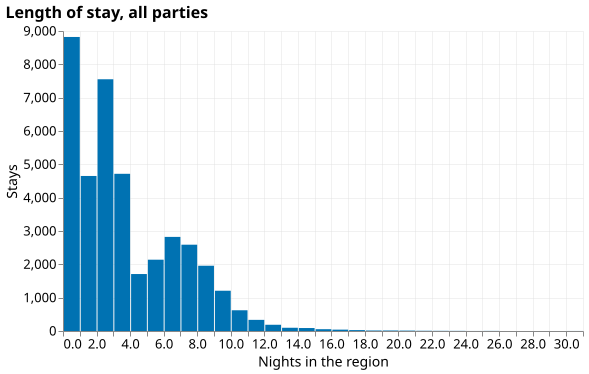
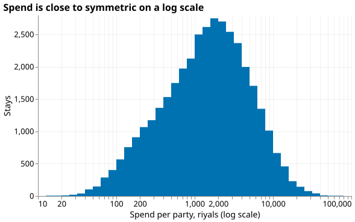

Tilal Regional Tourism Board: three years, six tables
9
visitor sites in a highland region
150,000
ticket sales, 2023 to 2025
40,000
visitor stays in the register
6,000
survey responses, Arabic and English
You work as Leen Al-Suwayigh, the board's analyst. Nawal Al-Rashoud, the director, wrote the brief. Aws Al-Hudaif runs sites and ticketing, Rashed Al-Shalan collects the hotels' occupancy returns, Atheer Al-Muhaya owns the survey and the complaints log, Nayef Al-Jumaah drew the charts of last year's report, Hanouf Al-Rumaihi is the data protection officer. The board, its people and every record are fictional and generated with a fixed seed.
The method of this course
Question, chart, reading: in that order, every time
1 · Aska question with a unit and a comparison
→
2 · Lookwith a chart and a summary that fit the variable
→
3 · Writetwo sentences: what it shows, what it does not
→
4 · Checkcould it be chance, and does it rerun
Part of the course
Assistant
Supervised quizzes, and the first draft of every chart reading
Off
Plotting and dataframe syntax in the labs
A tutor that hints one step at a time and writes no chart for you
The capstone
Free; assisted charts and sentences are marked and defended live
Before the first lab
One notebook proves the setup; three rules govern the data
Setup check
Open 00_setup_check.ipynb in Colab or locally and run all cells. It imports the libraries, reads the six tables and draws one chart.
uv sync
uv run jupyter lab
Handled as personal data
The data is synthetic and is still handled as the board would handle the real thing:
stays and hotels appear only under pseudonymised keys
no chart singles out one visitor or one hotel
small groups are not published, and a rate travels with its denominator
What the director sent
Five asks, none of them answerable as written
Nawal Al-RashoudWho is actually coming, and do they stay? I keep hearing that our visitors "pop in and leave".
Nawal Al-RashoudAtheer's team logged a lot of complaints about the Cable Car. Is that our problem site?
Nawal Al-RashoudSatisfaction went down last year. Why, and whose fault is it?
The trap. Open the data now and you will chart whatever is easiest to chart, then call it the answer.
The tool of this session
An answerable question names four things
Part
It says
Ask 3, rewritten
Unit of observation
what one row is
one complaint; one ticket sale
Variables
which columns are used
site; tickets in the sale
Comparison
what is set against what
complaints per thousand visitors, by site
Kind
exploring, or testing a claim fixed in advance
exploratory
The test. Could a colleague answer it without phoning you? "How many complaints per thousand visitors does each site receive?" passes. "Is it our problem site?" does not.
What one row is
"Visitors" is a different thing in every table
Table
One row is
Rows
arrivals
one origin market in one month
180
tickets
one ticket sale at one site
150,000
stays
one visiting party's stay in the region
40,000
occupancy
one hotel on one day
43,840
survey
one visitor's response after a site visit
6,000
complaints
one complaint
2,418
Counting rows counts units: 40,000 stays are parties, not people.
Two tables meet only after both are brought to one unit, such as the week.
Two kinds of work
Exploring finds questions; confirming answers one fixed in advance
Exploratory
You look at the data to see what is there
Many cuts, many charts, the choice made after looking
Output: patterns worth a question
Honest wording: "we saw", "in this data"
Confirmatory
The comparison was written down before the data was seen
One planned analysis on data not used to find the pattern
Output: evidence for or against a claim
Honest wording: "the test planned in advance showed"
Why a found pattern needs a fresh test. The data that suggested a pattern cannot also confirm it: you chose the pattern because it stood out there.
One page before any chart
The plan is a table, and it passes a checklist
{"question": "How many complaints per thousand visitors does each site receive over the three years?",
"table": "complaints", "also": ["tickets"],
"unit": "one complaint logged by the visitor experience team",
"variables": ["site", "tickets"],
"comparison": "complaints per thousand visitors by site, with the count and the visitors beside it",
"kind": "exploratory"}
The checklist rejects a question with a word nobody can measure, a unit that is not the table's, fewer than two variables, or no comparison.
It does not judge whether the question is interesting. That stays with you and the director.
A narrower promise
The plan answers "what happened", not "why"
Ask 5: "Satisfaction went down last year. Why, and whose fault is it?"
Plan: "Did mean satisfaction change from 2024 to 2025 inside each origin market, and did the mix of markets among respondents change?"
The data can show where the fall sits.
It cannot assign a cause: nothing was varied on purpose.
Say so in the plan, before the director expects more.
Checkpoint
Which rewrite can be answered?
The director asks: "Did the festivals bring people, or would they have come anyway?" Which rewrite belongs in the plan?
Were the festivals successful for the region?
How many arrivals were recorded in the festival months?
By how much did arrivals in each festival month exceed the baseline for that month of the year?
Did the festivals cause visitors to choose Tilal over other regions?
Why. It names the unit (a month), the variable (arrivals) and the comparison (the festival month against what season and trend lead us to expect).
Before the first chart of a table
A profile asks six things of a table
1 · Grain and key
Is one row what the dictionary says? Is the key unique?
2 · Types
Are dates dates and numbers numbers, or text that looks like them?
3 · Missing values
How many, and above all where?
4 · Ranges
Smallest and largest: can they be true?
5 · Categories
How many distinct values, and how spelled?
6 · Coverage
Which period and which groups does the table hold?
Four of the planted issues are visible in these five lines. Find them before the next slide.
SUMMARIZE is DuckDB's; df.describe(include="all") gives a similar table in pandas.
Lab 1.2, step 1
40,600 rows hold 40,000 stays
40,600
rows in the export
40,000
distinct stay keys
600
rows that repeat an earlier row in every column
Every repeated key is an exact copy: a double entry, safe to drop.
Had the copies differed in any column, the repair would be the owner's decision, not yours.
Left in, the copies make every count 1.5% too high and nothing looks wrong.
Lab 1.2, step 2
The share of missing values matters less than where they sit
Day visits21.7% without spend
Overnight stays2.1% without spend
Overall, spend is missing in 2,577 of 40,000 stays: 6.4%, which sounds harmless.
Day visitors spend least and answer least. An average over the rows that remain leans toward overnight visitors.
The decision: keep the rows, report the share missing by group, never fill in a typical value.
Lab 1.2, step 3
A code that poses as a number moves every summary
11.26
mean nights with the 320 rows of 999 left in
3.30
mean nights without them
999 means "not recorded". It is in 0.8% of the rows and more than triples the mean.
One market is stored as Gulf, GCC and gulf with a trailing space: 586 stays would fall out of any group-by.
14 stays arrive in 2032.
Look at the smallest and the largest value of every column, and at every distinct value of a category with few of them.
The output of a profile
An issue log holds evidence and a decision someone can dispute
Issue
Rows
Decision
Rows that repeat an earlier row in every column
600
drop the copies
Nights is 999 where the length was not recorded
320
set to missing
The Gulf market under three spellings
586
recode to one spelling
Spend missing, mostly for day visits
2,577
keep and report the share
Arrival dates in 2032
14
set to missing; ask the owner
The log travels with every chart made from the table. The supplied clean register, U.stays(), applies exactly these decisions, and every later lab starts from it.
Checkpoint
What do you do with the 999s?
320 stays have 999 in the column nights. The data dictionary does not mention the value. What goes into the issue log?
Set them to missing, record the 320 rows, and ask the register's owner what 999 stands for
Replace them with the median length of stay so that no row is lost
Keep them: a few very long stays are plausible in a tourism region
Delete the 320 rows from the register before any analysis
Why. The length of those stays is unknown. Missing says so; any other value claims knowledge nobody has. The rows keep their other columns.
One variable at a time
A distribution answers "which values, how often"

Lab 1.3, step 1: nights in the region, all parties, one bin per night.
Read four things: where the bulk is, how wide, how many humps, how long the tail.
Here: a spike at 0, a hump at 2, a low hump near 7, a tail to 31.
Three humps in one histogram usually mean three kinds of unit mixed together.
The one choice a histogram has
The bin width decides what a histogram can show
Too wide
Bins of 7 nights put 13,205 of the 17,367 stays from other regions into the first bar. Two humps become one.
Fitted to the variable
Nights is a count: one bin per night. Spend spans three orders of magnitude: equal steps on a log scale.
Too narrow
Bins of 10 riyals of spend leave a handful of stays in each bar: the shape drowns in noise.
Try two or three widths and keep the one where the shape stops changing. Say the width in the axis title or the caption.
Lab 1.3, step 2
To compare groups of unequal size, compare shares
Counts would show the size of each market, not its shape.
80% of parties from the Tilal region are day visits; none from Europe.
"Other regions" has two humps with nothing at 4 nights.
Lab 1.3, step 3
A box plot draws five numbers and takes one line per group
The same stays as the five histograms.
Box: first quartile, median, third quartile. Whiskers: the rest, short of far points.
Good for many groups and for comparing middles and spreads.
"Other regions" and "Asia" look alike here: medians 3 and 4, boxes 2 to 6 and 2 to 5.
Lab 1.3, step 4
The box cannot show two humps
Nights, "Other regions"
1
2
3
4
5
6
7
8
9
Share of stays
15%
31%
16%
0%
4%
10%
10%
7%
4%
63% of these stays last 1 to 3 nights and 37% last 5 or more. None lasts 4.
The median, 3 nights, belongs to the short trips only. The box, 2 to 6, runs straight across the valley.
The box plot is not wrong. It was asked "what kinds of trip are there" and answers "where is the middle half".
Two cautions
Smooth curves and small groups both invent detail
Density curves
A density plot is a smoothed histogram with a bandwidth in place of a bin width. It overlays well, and it draws mass where no value can be: below zero nights, between whole nights. For counts and scores, prefer bars.
Small groups
A histogram of 40 values has bumps that mean nothing. Read a group's size before its shape: Europe has 2,166 stays here, one site in one month may have a dozen.
Responsible use. A point drawn for one extreme party can single out an identifiable visitor. Show far points only where a group is large, or summarise them.
Checkpoint
Which chart for which question?
Aws Al-Hudaif asks whether visitors from other regions come for one kind of trip or several. You have their 17,367 stays with the nights of each. What do you draw first?
A box plot of nights for that market
A bar with the mean number of nights and an error bar
A histogram of nights with bins seven nights wide
A histogram of nights with one bin for each night
Why. "One kind or several" is a question about humps. Only a histogram with bins fine enough to separate them can show two.
Lab 1.4, step 1
The gap between mean and median is a first reading of the shape
Variable
Mean
Median
Mean / median
Spend per party, riyals
2,736
1,498
1.83
Nights
3.30
2
1.65
Booking lead, days
16.2
6
2.70
Satisfaction, 1 to 5
4.12
4
1.03
A mean far above the median says "long right tail" before any chart is drawn.
Mean and median that agree do not prove symmetry: satisfaction is piled against the top of its scale.
Lab 1.4, step 2
"Mean plus or minus one standard deviation" can describe nobody
Spend, as often reported
2,736 ± 3,788 riyals.
The lower end is 1,051 riyals below zero. No party spent that.
Spend, by quartiles
Median 1,498; half of the parties between 571 and 3,392.
Three amounts that real parties spent.
The standard deviation squares distances, so a few large bills dominate it.
Removing the top 1% of spend cuts the standard deviation by 24% and the median by 1.5%.
Lab 1.4, step 3
Variables that multiply are symmetric on a log scale

Spend per party, equal steps on a log scale.
Spend is nights times party size times a daily rate.
On a log scale, equal distances are equal ratios.
Geometric mean 1,344 riyals: near the median 1,498, half the mean 2,736.
Lab 1.4, step 4
A zero-heavy variable needs two numbers
36%
of parties did not book at all: lead time 0
14 days
median lead of those who booked
6 days
median of everyone, which describes neither group
Two populations share one column: walk-ins and bookers.
First the share at zero, then a summary of the rest.
The same shape: spend on tickets among all residents, complaints per visitor, days absent.
Lab 1.4, step 5
A score from 1 to 5 is summarised by shares
539.2%
438.3%
318.1%
24.1%
10.4%
"77% score 4 or 5" is a sentence a board can repeat. "Mean 4.12" hides whether the rest are at 3 or at 1.
A mean of scores assumes the step from 4 to 5 equals the step from 1 to 2. It is still used to compare groups, as Day 2 will; show the shares beside it.
The evidence for outcome 3
Every question gets a chart, a summary and two sentences
Shape
Centre
Spread
Chart
Long right tail (spend)
median, or geometric mean
quartiles
histogram on a log scale
Count with humps (nights)
median, with the share in each hump
shares by range
bars, one per value
Zero-heavy (booking lead)
share of zeros, median of the rest
quartiles of the rest
two parts
Score (satisfaction)
share scoring 4 or 5
all five shares
bars of shares
A summary always carries the number of values it rests on and what was left out: here the 2,577 stays with no stated spend, most of them day visits.
Checkpoint
Which sentence goes into the report?
A museum records minutes spent inside by each visitor. 45% of the records show 0 minutes because those visitors used only the cafe. The others stay a median of 70 minutes. Which summary is honest?
Visitors spend a mean of 41 minutes in the museum
45% of visitors use only the cafe; the others stay a median of 70 minutes
The median visitor spends 25 minutes in the museum
Museum visitors stay a median of 70 minutes inside
Why. A zero-heavy variable holds two groups. Give the share at zero, then a summary of the rest, and the reader can see both.
Day 1
Three things to keep
The question comes first
Unit of observation, variables, comparison, and whether you are exploring or confirming. A plan that passes a checklist before any chart.
Profile, then log
Grain, types, missing values, ranges, categories, coverage. Each issue with its rows and a decision someone can dispute.
Shape before summary
Look at the distribution, then choose the centre and the spread that describe it. Always with the number of values and what was left out.
Day 2
Relationships and time
Two variables at once, counts against rates, three years of monthly arrivals, and a total that says the opposite of its parts.
Keep your plan from lab 1.1 at hand: Day 2 answers questions 2 to 5.
Every lab starts from the supplied tables. Nothing from today's notebooks is needed.